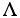

(with no uncertainty), resulting in this output on my computer:
(with no uncertainty), resulting in this output on my computer:C/C++ Users Journal August, 2005
A measurement is a process for estimating the value of a quantity. Because there is always some uncertainty in how close an estimate is to what you are really trying to measure, the accuracy is never perfect. Consequently, the level of uncertainty that is acceptable depends on why a measurement is needed—a seven-digit voltmeter is not required to discover if your car battery is flat.
Uncertainty information is used to determine the range of values consistent with a measurement result. Whenever one measurement is compared (or combined) with another, uncertainty is needed to properly interpret the results. These days, with increasing demands for objective quality standards, both users of measurement instruments and instrument manufacturers are thinking harder about how to make use of uncertainty information. This trend will grow.
There are international guidelines on how to approach the math of the measurement uncertainty problem. The Guide to the Expression of Uncertainty in Measurement (GUM) is internationally recognized as describing best practice [1] and, in the U.S., the National Institute for Standards and Technology has a Technical Note [2] based on the GUM. Unfortunately, the way the calculation is presented in the GUM is not easy to apply to modular systems. Recently, we looked at this issue, and by reformulating the maths, came up with a technique that solves the problem in a simple and intuitive way. We call it the "GUM Tree."
Basically, the technique works by designing a set of classes to encapsulate the extra math. In this article, I describe how to develop an abstract data type that I call an "Uncertain Number" using GUM Tree. Uncertain numbers can be used in mathematical expressions in place of simple values, leaving supporting library code to handle all the detail pertaining to uncertainty. I have written a library (available at http://www.cuj.com/code/) called "GUM Tree Lite" (GTL) to illustrate this. Note that GTL requires Boost headers. Other GUM Tree implementations with extended features are also available [3].
In general, a measurement function describes how influence quantities determine a measurement result. We write this in the form of Equation 1(a), where x1,x2,...,xl are the values of input quantities and xm is the value of the result. Because there will be some degree of uncertainty associated with x1,x2,...,xl, there is also uncertainty in xm.
I'll use a short example to illustrate how things work. Suppose that the power dissipated in a resistor, R, is estimated by measuring the voltage across its terminals, V, and then evaluating P with Equation 2(a). The first thing to note is that this calculation can be evaluated in simpler steps, such as Equations 2(b) and 2(c). This is important because it is always possible, and usually convenient, to decompose a measurement function into intermediate steps. A general algorithm for evaluating a measurement function in terms of its intermediate steps is shown in Equation 1(b), where 'j' labels each step that consists of a function, fj, taking a set of arguments, j, and returning a value, xj.
A bit more notation is needed for the uncertainty calculation. The standard uncertainty of x is written as u(x) and calculated by Equation 3(a) (assuming that the uncertainties in inputs 1,...,l are independent). The terms defined in Equation 3(b) are called components of uncertainty and relate the sensitivity of a result to changes in value of individual inputs. The component of uncertainty calculations can also be conveniently expressed in terms of the intermediate functions, as shown in Equation 3(c). There are two components of the power measurement: one due to uncertainty in V and one due to uncertainty in R.
The algorithms in Equations 1(a) and 3(c) underpin the GUM Tree design. These equations show that only the value and components of uncertainty of the direct arguments at each intermediate step are required. We can think of each step as an object encapsulating calculation details and visualize the iterative evaluation as a network (parse tree) of these objects exchanging information through a simple interface.
A GUM Tree implementation defines a standard interface for uncertain objects. In GTL, the IUncertain interface (Listing 1) consists of three functions: a value, a component of uncertainty, and a set of input references. The smart pointer UncertainPtr is used as a generic reference to objects that implement IUncertain.
Continuing with the power measurement example, I have coded the equation in Equation 2(a) as the function power; see Listing 2. This definition looks just like the measurement equation. We will see later that the required derivatives are obtained implicitly from the way in which GTL classes are designed.
Listing 2 also shows a simple print function to display results, which uses GTL functions to get a value and a standard uncertainty from an UncertainPtr object. I will use the Voltmeter class in Listing 3 to simulate measurements. A Voltmeter object is initialized with a precise (voltage) value but returns readings perturbed by random fluctuations (the random component has a standard deviation of about 0.12 V). The class also models an uncertainty contribution associated with the meter setup, which allows for the possibility that readings, from a particular meter, are systematically in error by a small, but unknown, amount (the uncertainty in this systematic contribution is 1 percent of the voltage reading). A Voltmeter object returns a reading as an uncertain number that incorporates both these uncertainty terms.
To show what the library can do, I will run through a few measurement scenarios. First, Listing 4 shows the power calculated from a single voltage reading and a resistance of R=100 (with no uncertainty), resulting in this output on my computer:
Power=1.05165 (0.0320412) W
Next, in Listing 5, I average 16 readings to reduce the individual scatter due to the random fluctuations. The output this time is:
Power=1.00987 (0.0210476) W
Here, the uncertainty is reduced by averaging. (Remember that the readings include an uncertainty contribution that is not independent. The impact of this will not change because of averaging.) However, by summing measured values, we are implicitly making the measurement equation more complicated: There are now actually 17 input terms! The software copes with this easily; however, a conventional analysis would now be more involved.
Finally, I allow the value of resistance to be uncertain in a way that depends on room temperature, as:
R(T)=R20(1+>(T-20))
Listing 6 incorporates this extension. I have assigned uncertain values R20=100±1 (for the resistance at 20° C), =0.01±1×10-4 /°C (for the temperature coefficient) and T=26±1° C (for a supposedly measured temperature). Listing 6 shows how uncertain inputs are created in GTL using the helper function uncertain, which takes three parameters: a value, a standard uncertainty, and an optional string identifier. The uncertainty calculation is now even more complicated, although the code remains clear! The output in this case is:
Power=0.961002 (0.0239944) W
These examples show the main features of a GUM Tree-based system. With GTL, you write simple expressions for measurements. The work of deriving and coding expressions for uncertainty has been factored out into the mathematical operation classes and automated. Indeed, you need no longer be explicitly aware of such detail, which is often laborious to work out and prone to errors.
GTL also provides the convenience of extensibility. An arbitrary number of intermediate measurement equations can contribute to a result, which in turn can be incorporated in further calculations. For example, the uncertain number for resistance can be considered to be a result in its own right, or a part of the power-measurement calculation.
GTL is intended to illustrate the general approach to design using the GUM Tree. GTL library code must do three things: define classes for elementary arithmetic operations and helper functions for instance creation, define classes and helper functions for uncertain inputs, and define routines that evaluate the attributes of a result.
Multiplication is a good example of an arithemetic operation. The helper function operator*() (Listing 7) creates an instance of Multiplication (Listing 8) and returns a smart pointer to it.
The IUncertain interface, which all mathematical operation classes implement, has the functions needed to evaluate a single step in algorithms in Equations 1(a) and 3(c). In the case of Multiplication, the member function value must implement Equation 4(a). Similarly, uComponent implements Equation 4(b), obtained by substituting fj/xright=xleft and fj/xleft=xright in Equation 3(c).
The base class BinaryOp (Listing 9) provides common code for all binary mathematical operations. The class maintains a pair of references to the operation's uncertain number arguments and the member function dependsOn returns the set of references to all input objects on which the object depends.
A library must also provide classes for inputs. In general, there is a need to distinguish between inputs (for instance, the i= 1,...,l) and intermediate results obtained during evaluation of a measurement function because there are additional attributes associated with inputs. (There is one further attribute required for a full GUM-compatible uncertainty calculation called "degrees-of-freedom." GTL does not support degrees-of-freedom; see [3] for libraries that do.) The input interface is also a good place to provide implementation-dependent attributes. Input objects in GTL implement ILeaf (Listing 10), a refinement of the IUncertain interface. A name attribute is added in ILeaf.
Listing 11 shows the GTL class for input objects. Objects of this class can represent constants, in which case the uncertainty_ member is zero, and uncertain inputs. The helper functions constant and uncertain create instances with appropriate parameter values.
Finally, a library must provide routines to extract various pieces of information from the attributes of uncertain number objects. The calculation of standard uncertainty using Equation 3(a), shown in Listing 12, is an example. To carry out the sum in this equation, dependsOn provides an iterable set of input references. This uncertainty calculation is quite general—it makes no assumptions about the measurement equation represented by the argument u.
In addition to standard calculations, useful ad hoc routines may also be part of library implementations. For example, GTL has a function components (Listing 13) that lists component names and components of uncertain values contributing to an uncertain number.
I mentioned earlier, in the context of the power measurement that averaged voltage readings, there were many uncertain input terms. You can apply components to the three power-measurement examples and see how the contributions to uncertainty vary in different measurement scenarios.
The GUM Tree design technique has real potential to improve instrumentation systems, most of which do not yet handle measurement uncertainty.
The key benefits of the technique have been illustrated using GTL. Calculation details are neatly hidden inside general-purpose library classes, which makes application code easier to write and easier to understand. Uncertain number code is also inherently extensible: Any result can become a part of further calculations. Conceptually, it is easy to work with uncertain numbers because they encourage you to think of measurements as single entities with multiple attributes. In contrast, the more common practice of treating the uncertainty calculation separately from data processing requires an often laborious analysis of the measurement function.
A pair of GUM Tree libraries have been written in C++ to handle real-valued and complex-valued measurement problems [3]. They provide robust platforms for using and extending the technique. We are currently using these libraries to develop data-acquisition software that transforms values from real instruments into uncertain numbers before processing. The Voltmeter class in GTL is a straightforward example of this idea.